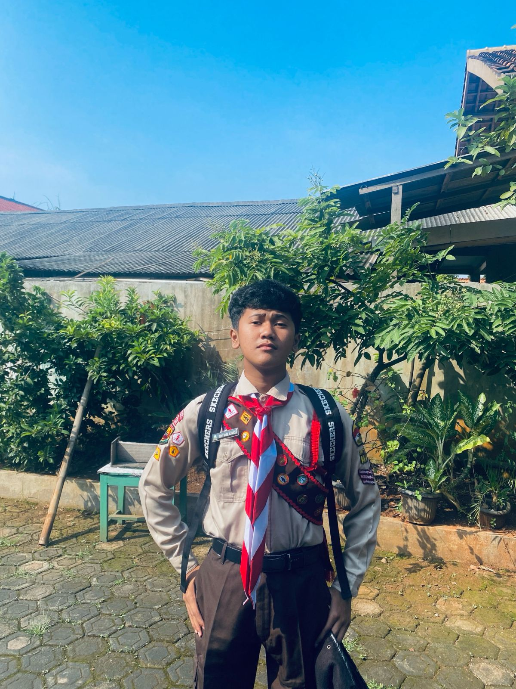

Ripki's Autobiography

Rifky Nabil Alfaroji
"I'm lucky you've been keeping me around"
About Me
Halo ges, nama ku Rifky Nabil Alfaroji
atau yang biasa dipanggil ripki atau nabil (jarang si yang manggil gitu). Aku lahir di kasur rumah sakit, Bekasi 02 November 2009 dan umurku pada saat menulis website ini adalah 15 tahun.
Aku punya hobi mendengar musik, nonton film, dan bermain game.
Aku juga suka bermain alat musik yaitu gitar.
Aku baru bisa main sih, baru belajar sekitar 8 bulan an lah kurang lebih.
Tujuan ku bermain gitar adalah ya biar keliatan keren, tapi ternyata bermain gitar tidak semudah yang aku kira. Banyak sekali yang harus dipelajari dari bermain gitar seperti menghafal chord, memahami tangga nada, pentatonic scale dan lain sebagainya.
Achievements
Dreams
Impian ku adalah,
aku ingin membahagiakan kedua orang tuaku.
Dan Impian terbesar ku adalah aku ingin bekerja
pada bidang pertambangan yaitu tambang batu bara.
(aku ingin jadi bos batu bara wkwkkw)
About My Schools
SMPIT Fitrah Hanniah adalah sekolah Islam terpadu yang berlokasi di Cibitung,
Kabupaten Bekasi, Jawa Barat. Sekolah ini memiliki visi untuk menjadi institusi pendidikan Islam yang menghasilkan siswa yang cerdas, saleh, dan berpengaruh.
SMPIT Fitrah Hanniah adalah sekolah yang mengintegrasikan pendidikan akademik dan nilai-nilai keislaman, menjadikan siswa-siswinya tumbuh tidak hanya dengan pengetahuan tetapi juga dengan karakter yang kuat. Sekolah ini menawarkan berbagai kegiatan yang mendukung pengembangan keterampilan siswa.